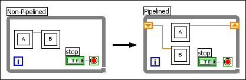
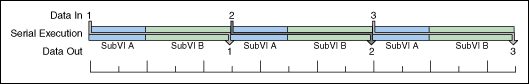
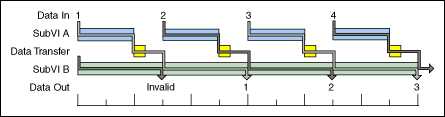

The primary advantage of a multiple-CPU system, also known as multi-core, multiprocessor, or SMP system, is that multiple threads can execute in parallel. Therefore, it is difficult to take advantage of a multiple processor system when an application consists mainly of a single sequential process. However, you can take advantage of multiple CPUs to improve the throughput of a sequential process by implementing a pipelined architecture. A pipeline takes advantage of parallel execution on multiple CPUs while preserving sequential dataflow.
|
Note��Pipelining an application requires data transfer between CPUs, which takes more time than simply passing data to the next operation on a single CPU. Therefore, implementing a pipeline increases the speed of the VI only if the time saved through parallel processing exceeds the time spent transferring data between CPUs. |
To implement a pipeline in an LabVIEW VI, divide the code into discrete steps or subVIs. For example, you can divide a complex sequential process into two discrete steps by wrapping the first half of the process in one subVI and the second half in another subVI. The following block diagram shows a standard sequential architecture on the left and a pipelined architecture on the right.

The architecture on the left does not take advantage of multiple CPUs because LabVIEW runs both subVIs in a single execution thread that must execute sequentially on a single CPU, as shown in the following illustration.

However, when you wire the subVIs together through shift registers, LabVIEW pipelines the subVIs. Now, when the VI runs on a system with more than one CPU, the subVIs execute in parallel, as shown in the following illustration.

|
Note��When you implement a pipeline, ensure that the stages of the pipeline do not use shared resources. Simultaneous requests for a shared resource impede parallel execution and diminish the performance benefit of a multiple-CPU system. |
If the CPUs executing the stages of the pipeline do not need to execute other tasks and you want to maximize CPU utilization, you can attempt to balance the stages of the pipeline so that each stage takes roughly the same time to execute. When one pipeline stage takes longer to execute than another, the CPU running the shorter stage must wait while the longer stage finishes executing.
Pipelining takes advantage of parallel processing while preserving sequential dataflow dependencies. In the previous example, subVI A processes input 1 during the first iteration of the loop, while subVI B processes the default value of the shift register, yielding an invalid output. During the second loop iteration, subVI A processes input 2 while subVI B processes the output of subVI A from the first loop iteration. Notice that the output from subVI B does not become valid until the pipeline fills. Once the pipeline is full, all subsequent loop iterations yield valid output, with a constant lag of one loop iteration.
|
Note��You must use caution to prevent undesired behavior due to the invalid outputs that occur at the beginning of pipelined execution. For example, you can use a Case structure to enable actuators only after N Timed Loop iterations elapse. |
In general, the output of the final pipeline stage lags behind the input by the number of stages in the pipeline, and the output is invalid for each loop iteration until the pipeline fills. The number of stages in a pipeline is called the pipeline depth, and the latency of a pipeline, measured in loop iterations, corresponds to its depth. For a pipeline of depth N, the result is invalid until the Nth loop iteration, and the output of each valid loop iteration lags behind the input by N�1 loop iterations.
|
Note��The number of pipeline stages that can execute in parallel is limited to the number of available CPUs. |
(Real-Time, Windows) If you want to target each pipeline stage to a particular CPU, you can implement a pipeline using Timed Loops. You cannot use shift registers in a Timed Loop to implement a pipeline because LabVIEW maps each Timed Loop to a single thread. To implement a pipeline with Timed Loops, you must place each pipeline stage in a parallel Timed Loop and pass data between the Timed Loops using a queue, local variable, or global variable.
|
Note��Implementing a pipeline using local or global variables can be difficult. Local and global variables do not wait for new data to become available, which can result in skipped inputs and repeated outputs from the same input. |
|
Note��Refer to the LabVIEW Real-Time Module Help for information about using pipelines in RT applications. |